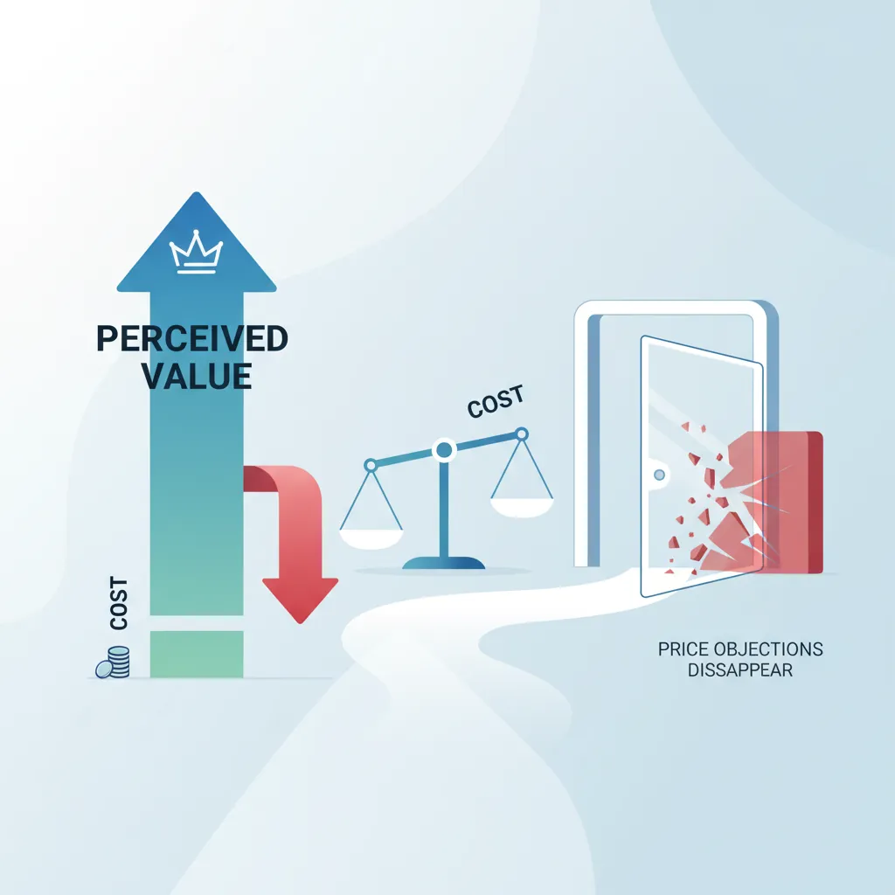
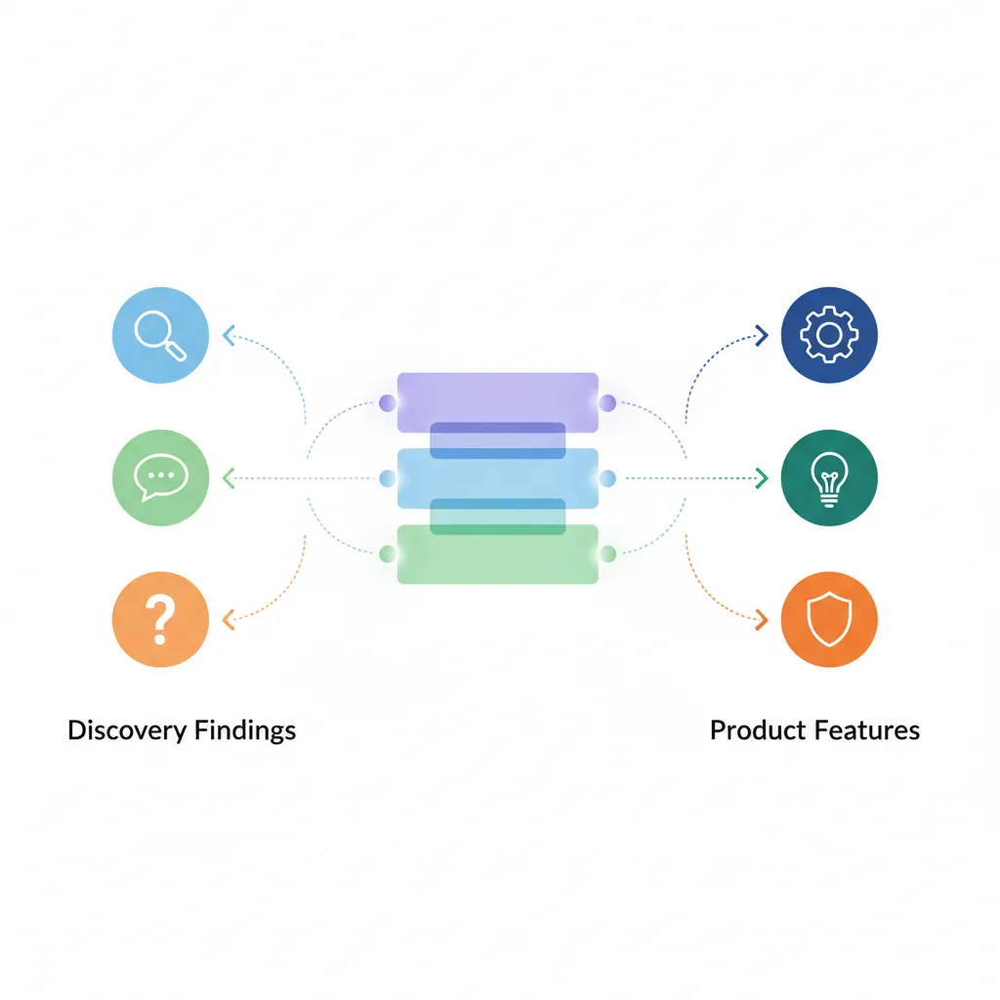

We use cookies to enhance your browsing experience, serve personalized content, and analyze our traffic.
By clicking "Accept All", you consent to our use of cookies. See our
Privacy Policy
for more information.
Sales Mastery Series Part 4: Discovery & Consultative Selling
February 12, 2026Wasil Zafar28 min read
Master discovery and consultative selling—SPIN selling, strategic questioning, pain discovery, Challenger Sale methodology, and value-based selling for any sales context.
Part 4 of 18: Building on qualification frameworks from Part 3, this article teaches you how to conduct deep discovery conversations that uncover true buyer needs and create urgency.
Discovery is the most critical phase of the sales process. Top performers spend 40-60% of their selling time in discovery, asking questions that uncover deep needs and build compelling business cases. This article covers proven questioning frameworks that transform transactional conversations into consultative partnerships.
Top performers use structured questioning frameworks to transform conversations into partnerships
The Discovery Imperative
Research from Gong.io found that top-performing salespeople ask 10.1 questions per call compared to 6.3 for average performers. But it's not just quantity—it's the quality and sequence of questions that matter. Great discovery calls feel like conversations, not interrogations.
SPIN Selling Methodology
Developed by Neil Rackham after studying 35,000+ sales calls, SPIN Selling remains the gold standard for consultative selling. The framework guides salespeople through a logical progression that builds urgency and positions solutions naturally.
S – Situation Questions
Situation questions gather facts about the buyer's current state. They're necessary but not sufficient—use them sparingly as buyers tire of providing basic information.
Situation Question Examples
"How many salespeople are on your team currently?"
"What CRM system are you using today?"
"Walk me through your current lead qualification process."
"Who's involved in decisions like this?"
"What's your timeline for making a change?"
Best Practice: Research before the call so you can ask fewer Situation questions. Use LinkedIn, company filings, press releases, and industry reports to come prepared.
SPIN Selling Conversation Flow
sequenceDiagram
participant Rep as Sales Rep
participant Buyer as Buyer
Note over Rep,Buyer: S — Situation Questions
Rep->>Buyer: What CRM do you currently use?
Buyer->>Rep: We use spreadsheets mostly
Note over Rep,Buyer: P — Problem Questions
Rep->>Buyer: What challenges do you face tracking deals?
Buyer->>Rep: We lose track of follow-ups
Note over Rep,Buyer: I — Implication Questions
Rep->>Buyer: How many deals slip through per quarter?
Buyer->>Rep: Probably 15-20% of pipeline
Note over Rep,Buyer: N — Need-Payoff Questions
Rep->>Buyer: If you could recover that 15%, what would it mean?
Buyer->>Rep: That is significant revenue — tell me more
P – Problem Questions
Problem questions explore difficulties, dissatisfaction, and frustrations with the current situation. They surface explicit needs—problems the buyer acknowledges.
Problem Question Examples
"What's your biggest challenge with lead qualification right now?"
"How satisfied are you with the accuracy of your sales forecasts?"
"Where do deals typically stall in your pipeline?"
"What frustrates your team most about the current process?"
"If you could wave a magic wand, what would you fix first?"
Key Insight: Problems without consequences don't drive action. Problem questions identify issues, but Implication questions create urgency to solve them.
I – Implication Questions
Implication questions are the secret weapon of consultative selling. They explore the consequences of problems—what happens if nothing changes. These questions transform small issues into urgent business priorities.
Implication Question Examples
"When deals slip, what impact does that have on your forecasting?"
"How does poor lead quality affect your team's morale?"
"What's the cost of each lost deal due to slow follow-up?"
"If this problem continues, what will that mean for your Q4 numbers?"
"How does this issue ripple into other departments?"
Psychology: Implication questions trigger loss aversion—the fear of negative outcomes is more motivating than the promise of gains. Paint a vivid picture of the pain of inaction.
N – Need-Payoff Questions
Need-Payoff questions shift the conversation from problems to solutions. They ask buyers to articulate the value of solving the problem—creating internal selling momentum.
Need-Payoff Question Examples
"If you could reduce your sales cycle by 30%, what would that mean for revenue?"
"How valuable would it be to have real-time visibility into pipeline health?"
"What would it mean to your team if lead qualification was automated?"
"If you solved this problem, how would that affect your annual targets?"
"Who else in your organization would benefit from this change?"
Pro Tip: When buyers articulate value themselves, they become more committed to the purchase. Need-Payoff questions create advocates who sell internally on your behalf.
SPIN Flow in Practice
A natural SPIN conversation might flow like this:
Situation: "How are you currently tracking deals through your pipeline?"
Problem: "What visibility challenges do you face with manual tracking?"
Implication: "When you miss a deal signal, how does that affect your forecast accuracy?"
Need-Payoff: "If you had real-time alerts for at-risk deals, how many more would you save each quarter?"
Start broad and narrow progressively, like a funnel. Each question builds on the previous answer, creating depth without feeling intrusive.
Level
Purpose
Example
Broad
Open territory
"What's your overall sales strategy for 2024?"
Medium
Explore area
"How does lead generation fit into that strategy?"
Narrow
Focus on specific issue
"What's your biggest bottleneck in lead qualification?"
Specific
Quantify and clarify
"How many qualified leads do you need monthly to hit targets?"
Layered Questioning
Peel back the onion by following each answer with a deeper probe. The goal is to reach the root cause behind surface-level problems.
Layered Question Sequence
Buyer: "We're struggling with pipeline visibility."
Layer 1: "Tell me more about that—where specifically do you lose visibility?"
Buyer: "When deals move to the proposal stage, we don't know their real status."
Layer 2: "What's causing that information gap?"
Buyer: "Reps update CRM inconsistently."
Layer 3: "Why do you think reps aren't updating consistently?"
Buyer: "Honestly, the CRM is clunky and they're too busy chasing quota."
Root Cause: Ease-of-use and workflow integration—not visibility itself—is the real problem.
Diagnostic Questioning
Use a structured diagnostic framework to systematically assess the buyer's situation. This approach works well for complex technical or operational problems.
The 5-Factor Diagnostic Framework
Process: "Walk me through your current workflow from start to finish."
People: "Who's involved at each stage? Who makes decisions?"
Technology: "What systems support this process? How integrated are they?"
Metrics: "How do you measure success? What KPIs matter most?"
Pain: "Where are the friction points? What breaks most often?"
Active Listening Mastery
Great discovery is 80% listening, 20% talking. Active listening isn't passive—it's an engaged skill that builds trust, uncovers insights, and makes buyers feel understood.
The HEAR Framework
Hear: Focus completely on the speaker. Eliminate distractions—close tabs, silence notifications, maintain eye contact.
Empathize: Acknowledge emotions behind words. "That sounds frustrating" or "I can see why that matters to you."
Analyze: Process what's said and unsaid. Note tone, hesitation, and enthusiasm as signals.
Respond: Reflect back what you heard before adding new input. Confirm understanding.
Reflective Listening Techniques
Technique
Purpose
Example
Mirroring
Encourage continuation
Repeat the last 1-3 words as a question: "...pipeline visibility?"
Paraphrasing
Confirm understanding
"So if I'm hearing you correctly, the issue is..."
Labeling
Name emotions
"It sounds like you're concerned about the risk of..."
Summarizing
Consolidate insights
"Let me make sure I've captured everything: You're facing X, Y, and Z..."
The Power of Silence
Silence is an underused discovery tool. After asking a question, wait at least 3-5 seconds before speaking again. Most salespeople jump in too quickly, missing deeper answers.
Strategic Silence Applications
After questions: Let buyers think before responding—rushed answers are shallow answers.
After statements: Pause after key points to let information land.
During objections: Resist the urge to respond immediately. Silence often prompts buyers to say more.
At closing moments: Ask for the business, then stop talking. The first person to speak often concedes.
Pain Discovery
No pain, no change. Buyers don't act on mild inconveniences—they act when problems become urgent and the cost of inaction exceeds the cost of change. Pain discovery is the art of helping buyers see, feel, and quantify their problems.
Pain amplification helps buyers see consequences they haven't fully considered
The Pain Amplification Framework
Pain amplification isn't manipulation—it's illumination. You help buyers see consequences they haven't fully considered. The goal is to move pain from "acknowledged" to "urgent."
The Pain Elevation Ladder
Level
Pain State
Buyer Behavior
1. Latent
Problem exists but unrecognized
No interest in solutions
2. Aware
Problem acknowledged
Will take meetings but no urgency
3. Frustrated
Problem causing friction
Actively seeking solutions
4. Critical
Problem blocking goals
Urgent need to act—budget mobilizes
5. Crisis
Problem causing damage
Whatever it takes—price becomes secondary
Quantifying Pain
Abstract pain doesn't move budgets—quantified pain does. Help buyers attach numbers to their problems.
Pain Quantification Questions
"How many hours per week does your team spend on this manual process?"
"What's the average deal size you lose when this problem occurs?"
"How many deals slipped last quarter due to this issue?"
"If we put a dollar amount on this problem, what would it be annually?"
"What's the opportunity cost of leaving this unsolved for another six months?"
Pain Mapping Across Stakeholders
Different stakeholders feel different pain from the same problem. Map pain to each persona in the buying group.
Stakeholder
Pain Lens
Questions to Ask
Executive
Strategic impact, revenue, risk
"How does this affect your ability to hit board-level objectives?"
Finance
Cost, ROI, budget efficiency
"What's the total cost of ownership for your current approach?"
Operations
Efficiency, process, workload
"How much time is your team losing to workarounds?"
End User
Daily frustration, usability
"What's the most annoying part of your current workflow?"
Challenger Sale Methodology
The Challenger Sale, based on research from CEB (now Gartner), found that top performers don't just respond to buyer needs—they reframe how buyers think about their problems. Challengers teach buyers something new about their business.
The Three Challenger Pillars
Teach, Tailor, Take Control
1. Teach
Lead with insights the buyer hasn't considered. Challenge their assumptions about the market, their problem, or their approach. Good teaching reframes the conversation.
Example: "Most companies focus on lead volume, but our research shows qualified lead velocity—not volume—is the real driver of revenue growth. Here's what top performers do differently..."
2. Tailor
Customize your message to the buyer's specific context, industry, and stakeholder concerns. Generic pitches don't resonate.
Example: "For manufacturing companies like yours, the biggest constraint isn't technology—it's change management on the plant floor. That's why we've built implementation playbooks specifically for your industry..."
3. Take Control
Drive the sales process assertively. Don't let buyers stall with endless evaluations. Push back professionally when buyers make poor decisions.
Example: "I wouldn't recommend starting with a pilot—here's why. Our data shows pilots extend timelines by 4-6 months without improving outcomes. The fastest path to value is a phased rollout. Can we discuss what that would look like?"
Constructive Tension
Challengers create constructive tension—the productive discomfort that comes from realizing the status quo isn't working. This is different from being pushy or aggressive.
Constructive vs. Destructive Tension
Constructive Tension:
Challenges the buyer's assumptions
Based on evidence and data
Delivered with empathy and respect
Positions you as a trusted advisor
Destructive Tension:
Attacks the buyer personally
Based on opinion or arrogance
Delivered dismissively
Damages the relationship
Diagnosing Unstated Needs
Buyers don't always tell you what they need—sometimes because they don't know, sometimes because of organizational politics, and sometimes because they're testing you. Great discovery uncovers what's unsaid.
The Iceberg Model
What buyers tell you is the tip of the iceberg. Beneath the surface are hidden concerns, political dynamics, and emotional motivations.
What Lies Below the Surface
Above the Surface (Stated):
"We need better reporting."
"Our current solution is too expensive."
Below the Surface (Unstated):
"My boss is pressuring me to show ROI on last year's tech investments."
"I'm worried about my job security if this project fails."
"The VP of Sales and VP of Marketing disagree on priorities."
"We have a vendor relationship through the CEO's golf buddy."
Discovery Skill: Use open questions and careful observation to dive below the surface.
Reading Buying Signals
Pay attention to verbal and non-verbal cues that reveal unstated needs:
Signal
What It May Indicate
How to Probe
Hesitation before answering
Political sensitivity or uncertainty
"I sense there's more to this—what aren't you able to share openly?"
Mentions a competitor
Active evaluation or pressure tactic
"Tell me more about what drew you to them."
Asks about timeline multiple times
External pressure or deadline
"It sounds like timing is critical. What's driving that urgency?"
Sudden topic change
Discomfort or hidden objection
"Before we move on, can we go back to X for a moment?"
Uncovering Political Dynamics
Buying decisions are political. Understanding who influences whom—and who opposes whom—is critical to navigating complex deals.
Political Discovery Questions
"Beyond the evaluation team, who else has a stake in this decision?"
"Who might have concerns about making a change?"
"How are decisions like this typically made here?"
"Is there anyone whose support would be particularly important to have?"
"What internal resistance have you encountered so far?"
Value-Based Selling
Price is only a problem when value isn't clear. Value-based selling connects your solution to tangible business outcomes the buyer cares about—revenue growth, cost savings, risk reduction, or strategic advantage.

When perceived value clearly exceeds cost, price objections disappear
The Value Equation
Buyers evaluate purchases through a simple mental equation:
Is the Value Greater Than the Cost?
Perceived Value = Benefits - (Price + Effort + Risk)
Your job in discovery is to maximize perceived benefits while minimizing perceived effort and risk. When value clearly exceeds cost, price objections disappear.
The Three Cs of Value
Value Type
Definition
Discovery Question
Cost Savings
Reducing current expenses
"What's your current cost for this process? What would 20% savings mean?"
Capability Gains
Enabling new outcomes
"What could you accomplish that you can't do today?"
Competitive Advantage
Outpacing rivals
"How would this change your position relative to competitors?"
Feature-Advantage-Benefit (FAB) Model
Don't sell features—sell outcomes. The FAB model ensures every capability connects to a buyer-relevant benefit.
FAB Translation Examples
Feature (What it is)
Advantage (What it does)
Benefit (Why it matters)
AI-powered lead scoring
Automatically ranks leads by fit
"Your reps focus on deals that close, increasing quota attainment by 15%."
Single sign-on integration
One login for all tools
"Your team saves 30 minutes daily, reducing frustration and improving adoption."
Real-time dashboards
Live pipeline visibility
"You spot at-risk deals early enough to save them, improving forecast accuracy to 95%."
Business Case Development
A compelling business case translates discovery findings into a document that justifies the investment. It answers the question: "Why should we spend money on this, and why now?"
Business Case Structure
Seven Elements of a Strong Business Case
Executive Summary: One paragraph on the problem, solution, and expected outcome.
Current State: Document existing pain, inefficiencies, and costs—use buyer's own words from discovery.
Desired State: Paint a picture of life with the solution. Be specific and measurable.
Solution Overview: How your offering bridges the gap. Focus on relevant capabilities only.
Financial Impact: ROI analysis, payback period, cost-benefit breakdown.
Risk Analysis: What happens if they don't act? Competitive threats, lost revenue, escalating costs.
Include soft benefits: Not everything is quantifiable—mention employee satisfaction, reduced risk, brand perception.
Compare to alternatives: "Vs. doing nothing, vs. building in-house, vs. competitor X."
Demo & Solution Mapping
Demos aren't product tours—they're proof that you can solve the buyer's specific problems. The best demos connect features directly to discovery findings, creating "aha moments" that advance deals.

Effective demos connect features directly to discovery findings
The Discovery-Demo Connection
Every demo should be tailored based on what you learned in discovery. Generic demos lose deals.
The Demo Tailoring Framework
Before every demo, answer these questions:
What are the buyer's top 3 pain points? (Show how you address each)
Who will attend? (Tailor to their roles and concerns)
What are their decision criteria? (Hit each one explicitly)
What objections might arise? (Address preemptively)
What's the "wow moment" for this buyer? (Build toward it)
Demo Structure That Sells
The most effective demos follow a clear structure that maintains engagement and builds momentum:
The Tell-Show-Ask Demo Framework
1. Tell (30 seconds)
"Based on our conversation, I know pipeline visibility is your biggest challenge. Let me show you how we solve that."
2. Show (2-3 minutes)
Demonstrate the capability. Use their data or a closely matching scenario. Click through the actual product.
3. Ask (30 seconds)
"How does this compare to your current approach?" or "Would this address the issue you described?" Then listen.
Demo Sequencing
Show the most valuable capability first—don't bury the lead. Buyers often form impressions in the first 5 minutes.
Phase
Duration
Focus
Opening
2 min
Recap discovery; confirm demo objectives and attendee introductions
Hero Feature
8-10 min
Address #1 pain point. Create the "wow" moment.
Supporting Features
10-15 min
Additional capabilities mapped to other needs
Integration/Admin
5 min
Show IT-relevant features if technical buyers attend
Q&A and Wrap
10-15 min
Address questions; summarize value; confirm next steps
Common Demo Mistakes
Demo Pitfalls to Avoid
Feature dumping: Showing everything instead of what matters to this buyer.
Talking too much: Great demos are conversations, not monologues.
Ignoring the room: Watch body language; adjust if you're losing attention.
Skipping the "why": Every feature shown needs a "here's why this matters to you."
Generic data: Whenever possible, use the buyer's data or scenarios.
Technical failures: Always have backup plans for demo environments.
Solution Design
Complex sales often require co-creating solutions with buyers. Solution design is the process of translating discovery into a customized configuration, implementation plan, or proposal.
Co-Creation Principles
Buyers who help design the solution feel ownership over its success. Involve them actively:
Whiteboard sessions: Collaboratively map their workflow and where your solution fits.
Configuration workshops: Let buyers choose options—giving them control increases buy-in.
Pilot scoping: Define success metrics together—what would a successful pilot look like?
Reference matching: Connect them with customers who had similar requirements.
Proof of Concept (POC) Strategy
POCs can accelerate deals or stall them forever. Set clear success criteria upfront:
POC Success Framework
Before the POC:
Define 3-5 measurable success criteria with the buyer
Set a fixed timeline (2-4 weeks typically)
Agree on decision process after POC completion
Get executive sponsor commitment to act on results
Success Criteria Example: "The POC is successful if: (1) lead scoring accuracy exceeds 80%, (2) users rate ease-of-use at 4+/5, (3) we reduce qualification time by at least 25%."
Discovery Synthesis
After discovery calls and demos, synthesize your findings into actionable outputs that move deals forward.
The Discovery Summary
Send a summary after every major discovery call. It demonstrates listening, confirms alignment, and creates a paper trail.